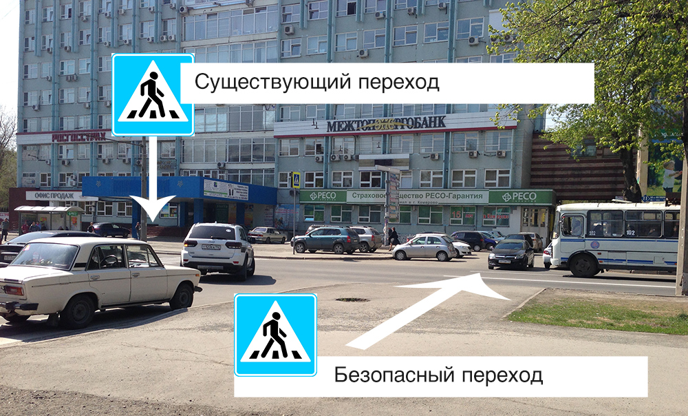
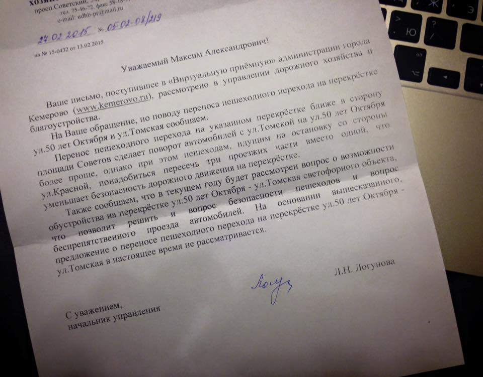

Свою позицию по переходу дороги на перекрёстке я уже как-то высказывал. Повторю её вновь, переходить дорогу на красный свет может быть безопасней, чем на зелёный.
Всё меньше людей знает, что ЗЭТА — это Завод ЭлектроТехнической Аппаратуры, но название остановки вроде пока живо (или его уже выкупил Росгосстрах напополам с рестораном «Волна»?).
Но сегодня разговор пойдёт о нерегулируемом перекрёстке, там, где водители должны пропускать пешеходов всегда. Один такой переход в Кемерове есть на Зэте.
Пешеходный переход на Зэте довольно оживлённый, рядом Крытый рынок, да и офисное здание рядом с остановкой добавляет траффика.
Выехать с улицы Томской на 50 лет Октября, которая в будни, кроме всего прочего, заставлена автомобилями с двух сторон бывает достаточно сложно. Движение по 50 лет Октября, к счастью, в основном одностороннее. Встречную полосу используют только водители общественного транспорта, да жители окрестных деревень (им редко удаётся добраться до площади Советов).
Именно из-за этого оживлённого движения с Томской на 50 лет Октября переход становится опасным, несмотря на защитные полоски на асфальте. Водители сначала стоят в пробке, потом должны, контролируя движение с обеих сторон, выехать на перекрёсток и поскорее покинуть его.
Это получается не всегда, иногда случается вот так.
Цветы на столбе у перехода подсказывают, что иногда всё заканчивается ещё печальней.
В качестве решения можно заставить быть водителей внимательней (ты заметил, что я пропустил запятую в предыдущем абзаце?). Ещё можно установить светофор.
А можно просто перенести пешеходный переход ближе к площади Советов. Метров на 20 ближе.

Значительных дополнительных трудностей для пешеходов не добавится (основная их масса всё равно идёт от рынка и пересекает Томскую где придётся). А вот водителям пересекать перекрёсток будет проще. К тому же, пешеходы, переходящие 50 лет Октября в новом месте будут останавливать движение машин по 50 лет Октября, таким образом выехать с Томской (и со стоянки Зэты) будет ещё проще. А главное безопасней для всех.
UPD. Я написал письмо в городскую администрацию со своим предложением и получил ответ.
